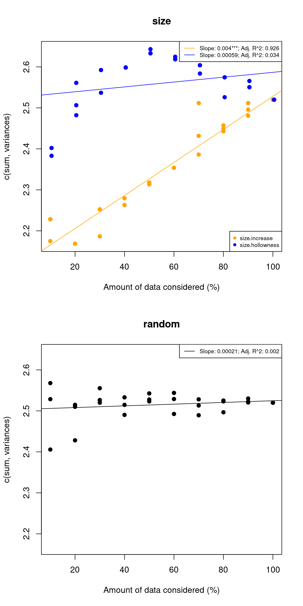

3 From traitspaces to disparity
Once you have created your traitspace, you can then measure disparity. But was is disparity? It depends.
There are many different definitions, some are more narrow that others but all agree on the same vague idea that disparity is a statistic that summaries a group’s space occupancy. Basically a measurement of how elements are distributed in space based on their characteristics (e.g. traits) and very often used to compare groups between each other based on that measurement. For example is disparity higher in group X or Y? It can be often easily opposed to “taxonomic diversity” (i.e. number of species). Basically for this workshop we will define disparity as the diversity of traits combinations which can tell us something about the biology of a system.
This definition is not universal among palaeobiologists: for example, some colleagues use a more restricted definition of the term (e.g. in Hopkins and Gerber (2021) - not OA; sneaky download from here - I think more inspired by historical definitions). I use the more broad defintion that we discuss here Guillerme, Cooper, et al. (2020) (maybe more inspired by ecology).
Note that in palaeobiology we call this statistic “disparity”, “morphological disparity” or “trait disparity” but they are all the same concept. Even more noteworthy, this is a concept that is also routinely used in ecology but often called “trait dissimilarity” or “functional diversity”. There is a very rich literature on it that I highly recommend to read to learn more about how this concept has been studied globally. Check out Petchey and Gaston (2006) and Mammola et al. (2021) as great starting points.
3.1 Measuring disparity
From this broad definition of disparity, there is many many ways to measure it. With some colleagues, we strongly argue that it should always be measured in regards to a biological question: i.e. measure it the way it will answer your specific question, not just the way other people have done it (Guillerme, Puttick, et al. (2020), Mammola et al. (2021), Guillerme, Cardoso, et al. (2024)), But we will see in more details how to do that later.
Let’s use a super simple case where we want to measure the standard deviation in the traitspace as our disparity metric2. This could be used for answering a simple question “how spread is the trait combination in our dataset”.
CATCHING UP ZONE: here’s an example of a traitspace made from continuous data. But please, feel free to use your own!
## An inbuilt ordination directly from the dispRity package
data(BeckLee_mat50)
my_traitspace <- BeckLee_mat50## The basics for measuring standard deviation
sd(my_traitspace)## [1] 0.2268704One other way to achieve the exact same results is through the dispRity function from the eponymous package.
This is a bit pointless and cumbersome for now but it will become more obviously useful later on.
## Same but using the dispRity package
my_dispRity <- dispRity(my_traitspace, metric = sd)
summary(my_dispRity)## subsets n obs
## 1 1 50 0.227So that’s it! You’ve now measured disparity. Well done. We will talk more about what to measure in a bit but first I want to chat about… The multidimensional nightmare
3.2 The curse of dimensionality
Basically this is a problem you get very easily when you go beyond anything three dimensional. When increasing the number of dimensions in your dataset things become very quickly intuitive and headache inducing, even after working on it for many years. Depending on how your brain works, you will have to take some leap of faith here and assume that what you see and understand is not always correct when you pile up a higher number of dimensions!
TINKER TIMES: have a think of how the volume of your traitspace will change with the number of dimensions.
[Click to visualise what your data is doing]:
## Measuring the volume for each additional dimensions
## A placeholder for the loop results
volumes <- numeric()
for(dimension in 2:ncol(my_traitspace)) {
## Calculating for each number of column the product of ranges
new_volume <- prod( # the product
apply(my_traitspace[, 1:dimension], 2, # apply a function for the selected columns (2)
function(x) diff(range(x)))) ## calculate the difference between the range of the column (max - min)
## Add it to our volume placeholder
volumes <- c(volumes, new_volume)
}
## Plot the volumes per number of dimensions
plot(x = 2:ncol(my_traitspace),
y = volumes,
type = "l",
xlab = "number of dimensions",
ylab = "volume")Congratulations, you now know about the curse of multidimensionality! We can see this excellent illustration by Toph Tucker to have a grasp of what is happening here.
3.2.1 Reducing the number of dimensions
CATCHING UP ZONE: loading some example data!
## Loading some example data
data(demo_data)
traitspace <- demo_data$hopkinsFor very large datasets, it can be useful to reduce the number of dimensions to avoid the curse as much as possible. This is especially the case if you use a PCA to build your traitspace. Because it ordinates your data per ranking variance, you end up with most variance in the first couple of dimensions. Often, you can reduce the number of dimensions so you have a cut-off of the n first dimensions that include X percentage of the variance in your traitspace. Usually this X is 95% or 99%.
One thing to keep in mind though when you do this is that if you have groups in your traitspace (we will see how to do this later), you might want to check whether they are all equally distributed along those axes. For example, a reduced traitspace with 95% of the total variance does not automatically means a traitspace with at least 95% of the variance for each group.
## How many axes are needed
axes_selection <- select.axes(traitspace, threshold = 0.95)
plot(select.axes(demo_data$hopkins))3.3 Which disparity metric to use?
So which disparity metric should you be using? It’s very easy: IT DEPENDS. In the next section we will be looking in more details what kind of analyses we can do with disparity and what kind of questions we can ask with such approach. But basically, it’s all about tailoring the disparity metric to your own specific question.
We have done some work on which metrics to choose with colleagues (Guillerme, Puttick, et al. (2020), Mammola et al. (2021) - but other great one exist e.g. Ciampaglio, Kemp, and McShea (2001), Petchey and Gaston (2006), Stewart et al. (2023)). Usually, most of these consist in comparing the effect of different metrics at capturing the correct pattern or their sensitivity to missing data. This is very important of course but I think it’s lacking a didactic aspect that would help people with no idea what to measure on how to measure. We discuss this in this preprint Guillerme, Cardoso, et al. (2024).
Basically we believe that for choosing a metric, rather than starting with a metric’s property, it might be easier to start with the question at hand. You can separate part of your statistical research into three components:
- The mechanism: that is the biological question at hand and usually has the word “why” in it. For example: “why do mass extinction change the disparity of the groups that survive the mass extinction?”. The why here is the mechanism by which disparity can change in groups due to mass extinctions (i.e. some biology).
- The process: this is the dynamic change that makes your question interesting and usually has the word “how” in it. For example: “how does disparity change before and after the mass extinction?”. The how here is the process by which disparity changes through time. This is not especially a biological question (although it ultimately will be) because you can just ask yourself how without asking why (even though that might make it harder to get your paper accepted or your project funded ;)).
- The pattern: this is the actual change involved in the process and usually has the work “what” in it. For example what is changing before and after the extinction event? This is effectively the statistic that will allow you to look at the process and understand the mechanism. Basically it’s the statistic, value or… disparity!
So once you have your mechanism and process in mind you can choose your metric.
3.3.1 Choosing and testing disparity metrics
You can use the dispRity and moms pipeline to test your metric.
moms.
## Testing the sum of variance
my_test <- test.metric(my_traitspace, metric = c(sum,variances), shifts = c("size", "random"))
plot(my_test)
TINKER TIMES: Have a go and test multiple metrics and multiple processes to see which one would work better!
[Click to expand the solution]:
## Does the sum of variance captures changes in size or in position
my_test1 <- test.metric(my_traitspace, metric = c(sum,variances), shifts = c("size", "position", "random"))
## What about the sum of ranges?
my_test2 <- test.metric(my_traitspace, metric = c(sum,ranges), shifts = c("size", "position", "random"))References
Ciampaglio, Charles N, Matthieu Kemp, and Daniel W McShea. 2001. “Detecting Changes in Morphospace Occupation Patterns in the Fossil Record: Characterization and Analysis of Measures of Disparity.” Paleobiology 27 (4): 695–715.
Guillerme, Thomas, Pedro Cardoso, Maria Wagner Jørgensen, Stefano Mammola, and Thomas J Matthews. 2024. “The What, How and Why of Trait-Based Analyses in Ecology.” bioRxiv, 2024–06.
Guillerme, Thomas, Natalie Cooper, Stephen L Brusatte, Katie E Davis, Andrew L Jackson, Sylvain Gerber, Anjali Goswami, et al. 2020. “Disparities in the Analysis of Morphological Disparity.” Biology Letters 16 (7): 20200199.
Guillerme, Thomas, Mark N Puttick, Ariel E Marcy, and Vera Weisbecker. 2020. “Shifting Spaces: Which Disparity or Dissimilarity Measurement Best Summarize Occupancy in Multidimensional Spaces?” Ecology and Evolution 10 (14): 7261–75.
Hopkins, Melanie J, and Sylvain Gerber. 2021. “Morphological Disparity.” Evolutionary Developmental Biology: A Reference Guide, 965–76.
Mammola, Stefano, Carlos P Carmona, Thomas Guillerme, and Pedro Cardoso. 2021. “Concepts and Applications in Functional Diversity.” Functional Ecology 35 (9): 1869–85.
Petchey, Owen L, and Kevin J Gaston. 2006. “Functional Diversity: Back to Basics and Looking Forward.” Ecology Letters 9 (6): 741–58.
Stewart, Kerry, Carlos P Carmona, Chris Clements, Chris Venditti, Joseph A Tobias, and Manuela González-Suárez. 2023. “Functional Diversity Metrics Can Perform Well with Highly Incomplete Data Sets.” Methods in Ecology and Evolution 14 (11): 2856–72.
Disparity metric or disparity index?. You might encounter both terms which designate the same thing: a disparity statistic. Some people prefer using the term “index” because a “metric” has a specific definition in mathematics (i.e. not all indices or statistics are metrics). Some other people prefer using the term “metric” (e.g. myself) because the term “index” has a specific definition in informatics (i.e. an index is a numbered element in a list). Tomato tomato.↩︎